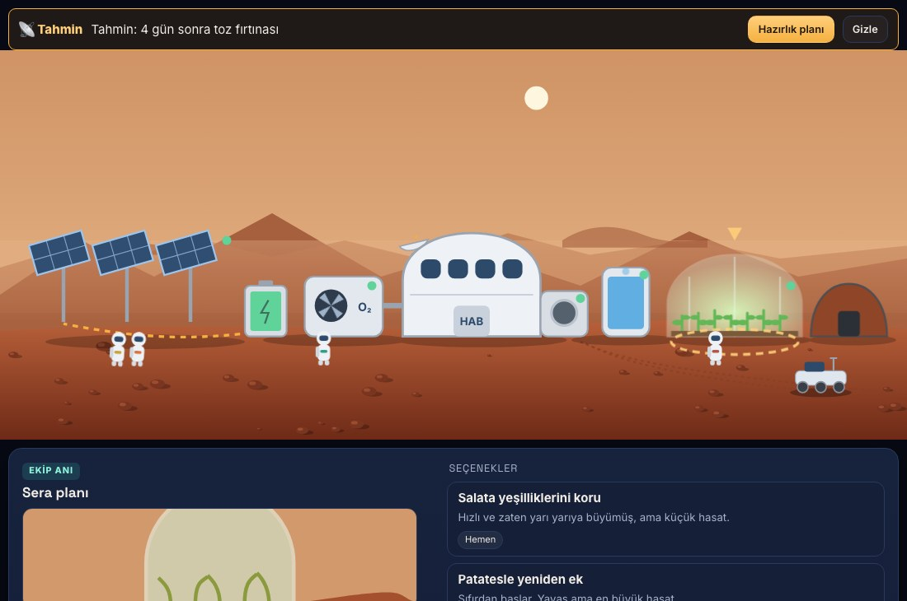
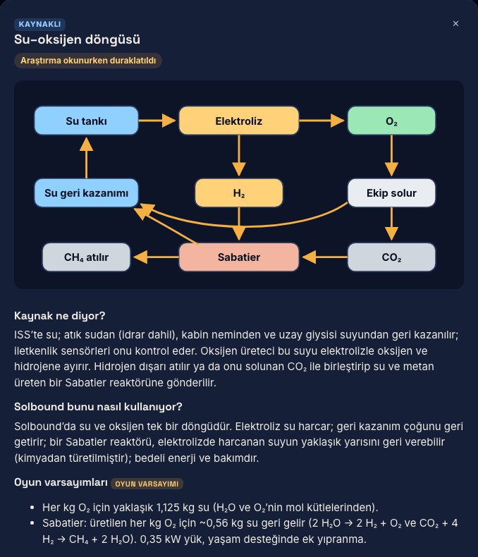
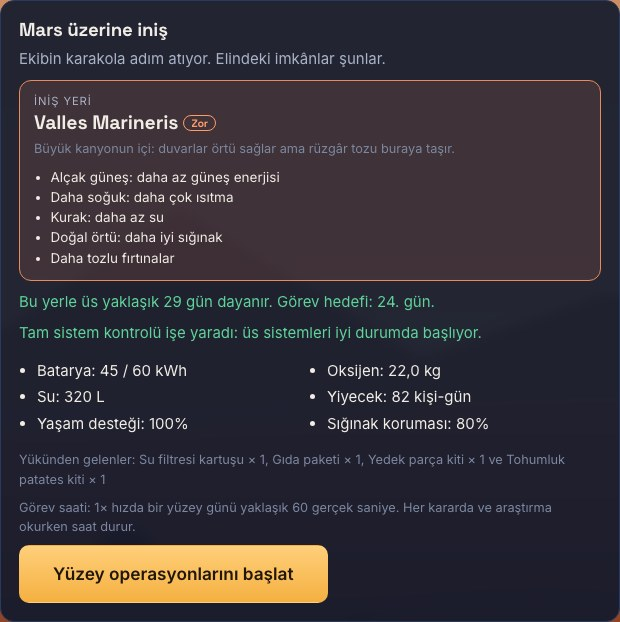
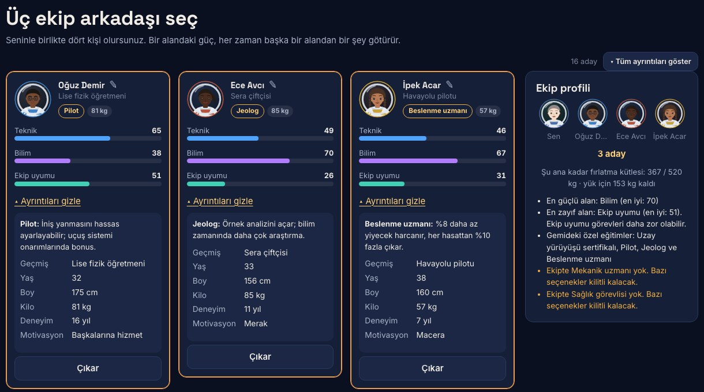
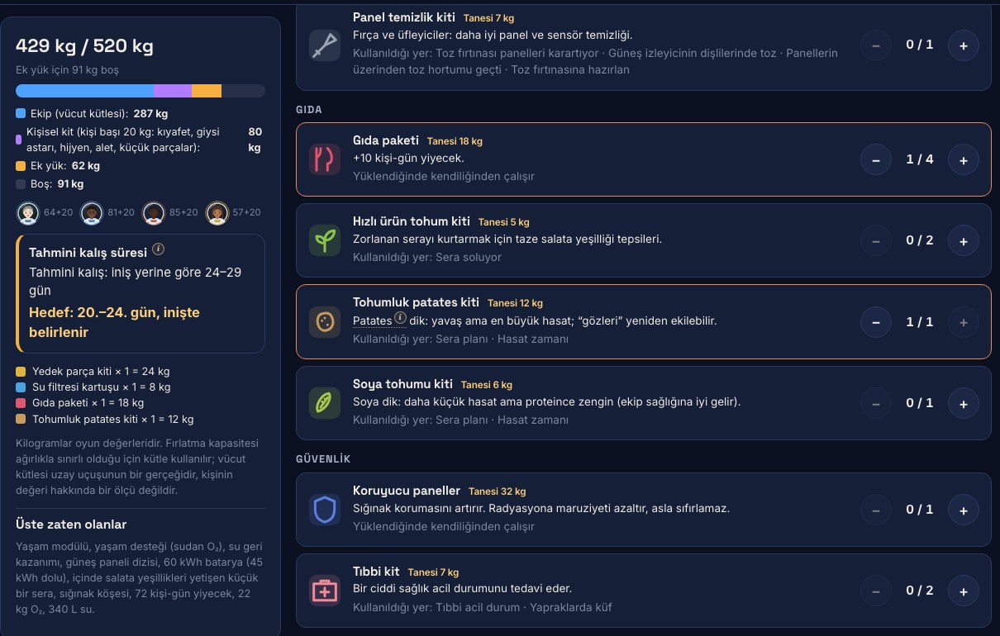
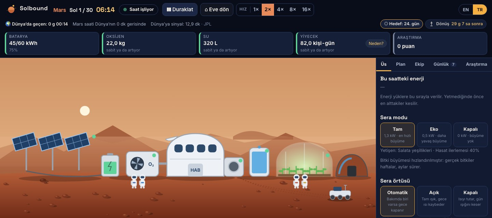
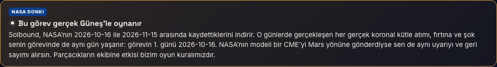
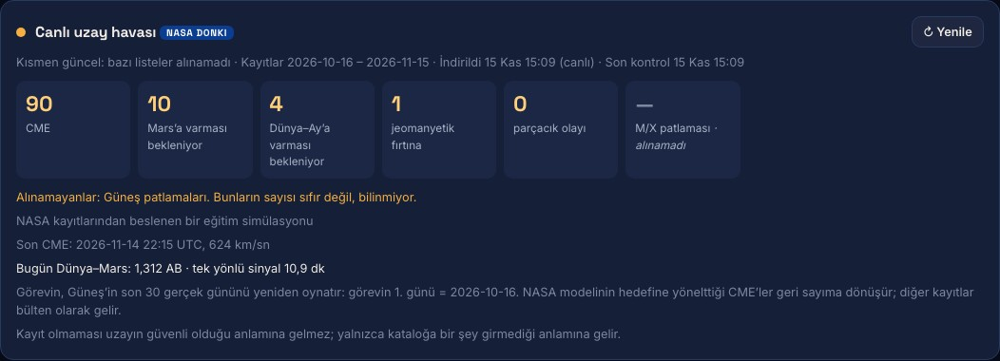
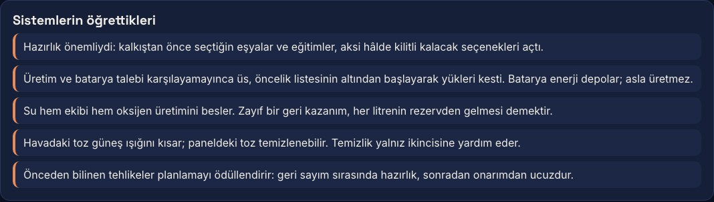

Gerçek Güneş fırtınaları. Dört astronot. 30 gün.
Hepsini eve getirebilir misin?
Ay ya da Mars üssünde oksijen, su, enerji, gıda ve radyasyon korumasını aynı anda yönettiğin bir eğitim oyunu. NASA’nın son 30 günde kaydettiği gerçek uzay havası olayları, görevinde aynı günlerde yaşanır.



Uzay temalı STEM içerikleri mühendislik ödünleşimlerini ya fazla basitleştiriyor ya da genç öğrenciyi kaçıracak kadar karmaşık anlatıyor. İstenen: öğrencinin bir Ay ya da Mars üssünü yönetip yaşam desteği, radyasyon koruması, enerji ve gıda üretimini dengelediği ve görevin kaderini belirleyen kararları bizzat yaşadığı bir oyun.
Her adayın uzmanlığı, kilosu ve ekip uyumu farklı. Bir alandaki güç başka bir alandan götürür.

Her kilo bir seçim: gıda paketi mi, kalkan mı, yedek parça mı?

Güneş açısı, su, soğuk ve toz iniş yerine göre değişir; hedefin inişte belirlenir.
Saat akar; fırtınalara geri sayımla hazırlan, dönüş penceresini kendin seç.

Kararlar saati durdurur. Her seçeneğin başarı şansı ve bedeli yazar; sonuç üste, kaynaklara ve ekibin sağlığına hemen yansır. Büyük olaylar önceden duyurulur, geri sayım boyunca hazırlık yapılır.
Toz fırtınasına 4 gün var: sera planı kararı verilirken üs, kaynaklar ve hazırlık bandı aynı ekranda.
| Yaşam desteği | Oksijen ve su stokları; elektroliz, MOXIE, su geri kazanımı; sızıntılar ve tek seferlik acil durum yedeği. |
| Enerji | İniş yerine, gece ve gündüze, toza bağlı güneş üretimi; batarya; sera modu ve ekip rutinleriyle tüketim kararı. |
| Gıda | Yanında getirdiğin paketler ile seradaki hasat arasında denge; sera enerji ister, hasat zaman. |
| Radyasyon | Sığınak koruma sağlar ama iş gücü ve zaman yer. Gerçek NASA DONKI olayları radyasyon uyarısına dönüşür. |
| Öğrenme | Araştırma kartları kararın arkasındaki bilimi açıklar; görev sonu değerlendirmesi oyuncunun kendi oyunundan dersleri çıkarır. |
| Sonuç | Hedef kalkıştan önce belirlenir. Sonuç beş kademelidir: tahminin ötesinde, herkes eve döndü, bedeli oldu, erken bitti, kaybedildi. Değerlendirme, sonucu belirleyen kararları gösterir. |
NASA’nın DONKI uzay havası veritabanı oyunun süsü değil, takvimidir: görevin 1. günü, kaydın ilk günüdür. Gerçek bir koronal kütle atımı Mars’a ya da Ay’a yöneldiyse oyuncu aynı gün uyarıyı ve geri sayımı alır.


Oyuna başlamadan önce brifing ve canlı uzay havası paneli: gerçek kayıt sayıları, son CME’nin tarihi ve hızı, Dünya–Mars sinyal gecikmesi.
Araştırma kartı: su–oksijen döngüsü.
Görev sonunda oyuncu kendi kararlarının sonuçlarını görür: kim eve döndü, hangi hazırlık neyi mümkün kıldı, hangi sistem neden zorlandı. Sonuç paylaşılabilir kısa bir özet filmine dönüşür.

Görev değerlendirmesi: dersler oyuncunun o görevde yaşadıklarından seçilir.
Kaynaklara 14 Kasım 2026’da erişildi. Oyundaki 31 araştırma kartının kaynak listesinin tamamı depoda: src/engine/research.ts ve docs/RESEARCH.md.